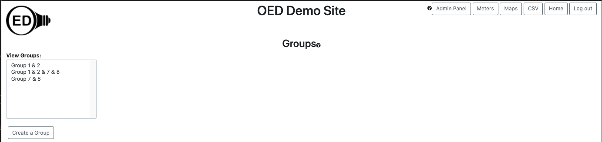
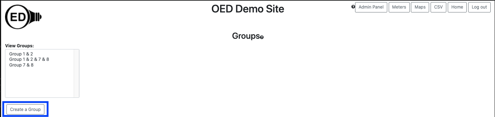
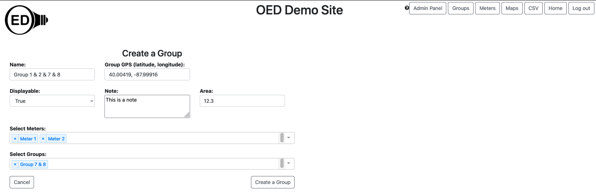
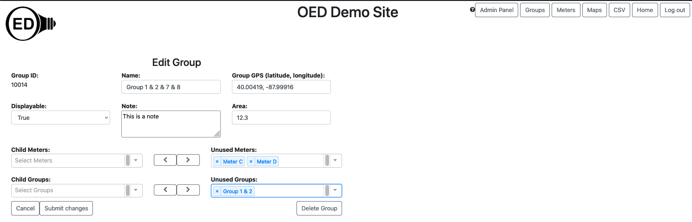
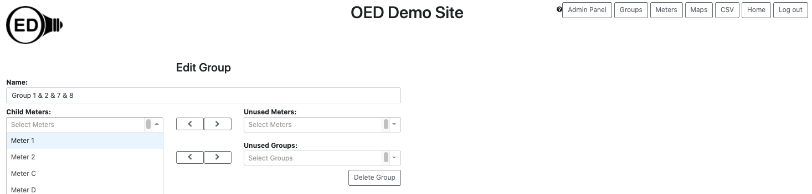

OED Documentation
Group
Version V0.8.0
Documentation overview
Admin documentation
Information
Site Management
Data Acquisition
Site Installation
User documentation
documentation versions for this page
Current page is V0.8.0.These features are only available to select people who oversee the OED site (called admins) so this information is not usually of interest to a general user.
Overview
If you are logged in as an admin and visit the "Groups" page then you can see everything a regular usage can see as shown on the group viewing page as well as the ability to edit groups. This is shown in the figure below. For general information, see the graphing groups page.
Usage
Click the "Create a group" button (highlighted with a blue box in the next figure). This will allow you to make a new group and take you to the appropriate page.
Use the name field to give this group a unique name that will make sense to users. Use the "Select Meters:" and "Select Groups:" dropdown menus as you would on any page to select the meters and groups to include within the new group. You can also set GPS coordinates, decide if it group is displayable to any user, create a note about this group (only seen by admins) and set the area. The next figure shows what creating a group named "Group 1 & 2 & 7 & 8" that includes Meter 1, Meter 2 and Group 7 & 8, GPS of 40.00419, -87.99916, a note of "This is a note" and area of 12.3 would look like.
When you are done, click the "Create a group" button. If you want stop the process, click the "Cancel" button. Either way you will be returned to the groups page. Once you create a new group, it will show up in the list on the group page. This group is highlighted in the next figure (by clicking on it) to see that the group contains the meters and group expected.

If you click the "Edit a Group" button next to the "Create a Group" button then you are able to edit the group highlighted in the list (in this case the new group we just created). Note this also lets you see the other values associated with a group. This takes you to another page. Next the "Unused Meters:" dropdown menu was used to select Meter C and Meter D. The "Unused Groups:" dropdown menu was used to select Group 1 & 2. Note that both of these menus do not include any meters or groups already included in this group or just selected. Note that Group 1 & 2 contains Meter 1 & Meter 2 and these two meters were already directly added to this group. While you may wish to avoid this, OED will not count readings more than once for any meter even if you add it more than once. Note it probably be a good idea to change the name of this group to reflect its new members. This could have been done along with any other value that you wished to change on this page.The screen looks as in the figure below.
Now you can click the left arrow on the meter line to add the two meters selected. The same process on the group line to add the one group selected. The next figure shows the result where the "Child Meters": dropdown menu was used to see that there are now four meters in this group (original two plus two just added).
If you click the "Submit changes" button then the updated group will be saved. You will see the updated group on the group page. If you click the "Cancel" button then the changes will be discarded.
You can remove meters and/or groups from this group by selecting the "Child Meters:" or "Child Groups:" and clicking the right arrow on the edit page. This is very similar but the reverse of the process above.
If you want to completely remove this group then click the "Delete Group" button.
Details
There is currently a bug in OED where when you hit the arrow to add a meter or group on the edit page it removes the choices on the other set (group or meter). The workaround is to first select the desired unused meter(s), add them and then do the same for the desired unused group(s).
Note that when you edit a group that is included in another group, the changes to the group impact the other group as well. So, if you delete a group it will disappear from other groups.
Groups will have features similar to meters in the near future and admins will be able to edit them similar to meters.
Note neither the area nor the displayable is currently used in OED. We hope to fix the displayable issue soon. The area will be used once OED completes its generalization so data displayed can be normalized by area. For now, sites may want to begin adding the desired values so they take effect when OED is done with these updates.